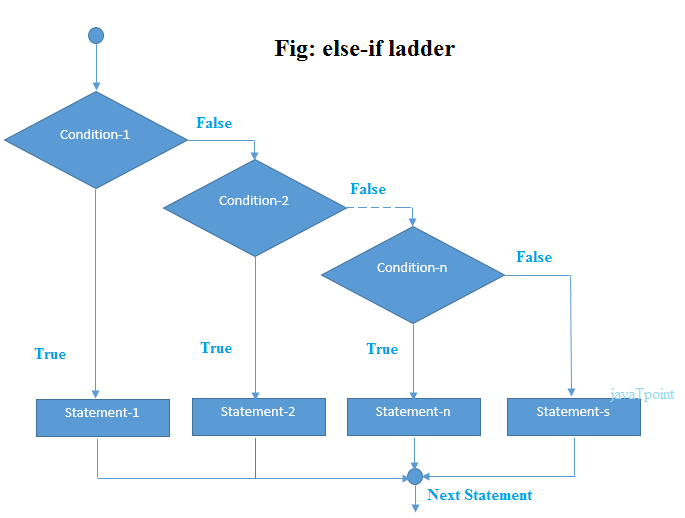
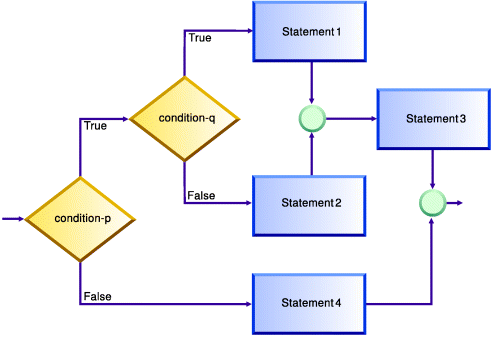

Conditionals
The If Statement
Now let’s talk about if statements. If statements are called conditionals.
They are used to check if a condition is true or false, and will execute
statements or commands depending on the scenario. If statements can be
categorized into 4 types: if, if-else, if-else-if, and nested if.
An if statement will check if a statement is true. For example, if 35
is less than 45 then I would like to output, “35 is less than 45”. In code
it would look something like this:
public class If_Statement {
public static void main(String args[]) {
int num1 = 35;
int num2 = 45;
if (num1 < num2) { //If 35 < 45 then execute the code below;
System.out.println( num1 + " is less than " + num2);
}
}
}
The If-Else Statement
An if-else statement will execute one block of code if something is true, otherwise it will execute another. Let’s say I wanted make a program that would check to see if a variable was equal to 11, I want to output “This number is 11”, otherwise I want to output “This number is not 11”. When written in code it would look similar to this:

public class If_Else {
public static void main(String args[]) {
int num = 12;
if (num == 11) {
System.out.println("This number is 11");
} else { //any condition other than when variable num = 11
System.out.println("This number is not 11");
}
}
}
When this is program is run, it will output "This number is not 11", as the program first checked whether the num variable has a value of 11, and since it does not, it moves on to the else which will run in any other case (if num is any value other than 11, it will jump to the else statement)
The Else-If Statement
An if statement can also be followed by an else if statement which can be used to check many conditions. An example would be checking if a number is under 50, over 50 or is equal to 50. You would write this program as follows:
public class Else_If {
public static void main(String args[]) {
int num = 37;
if (num > 50) {
System.out.println("This number is greater than 50");
} else if (num < 50) {
System.out.println("This number is less than 50");
} else if (num == 50) {
System.out.println("This number is equal to 50");
}
}
}
The Nested If
Finally it comes down to nested if statements. These are essentially if statements inside of if statements. They are used when checking if a condition is true while another condition is true. An example program would be checking if a number is greater than 100 and if it is check if it’s greater than 1000.
